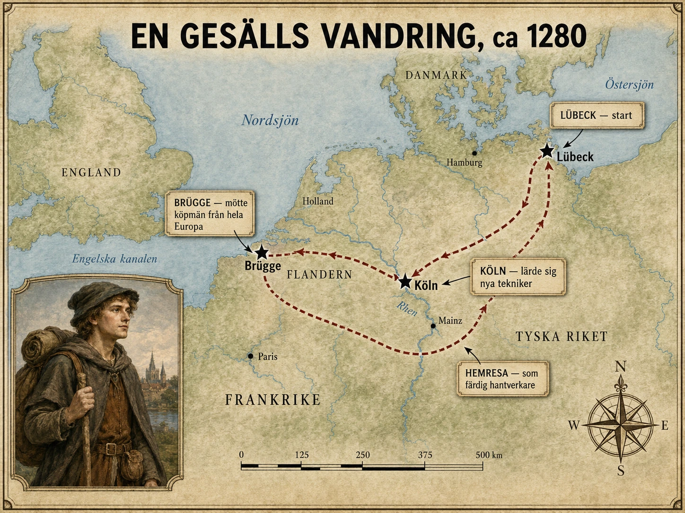

Morgonen Heinrich gav sig av
Heinrich knöt ihop sin packe i gryningen, medan staden ännu låg tyst. Verktygen längst ner — sylen, kniven, den krökta nålen, ett par färdiga sulor att visa upp. Ovanpå en extra skjorta och brödet hans mästare hade gett honom. Och i en hopvikt remsa pergament: ett brev som intygade att den här pojken kunde sitt yrke.
Han var nitton, kanske tjugo. I flera år hade han varit lärling hos en skomakarmästare i Lübeck. Han hade burit vatten och sopat golv, skurit läder tills fingrarna värkte, sytt om sömmar som blivit fel, fått skäll och gjort om. Nu var han inte längre lärling. Men han var inte heller mästare. Han var gesäll — och en gesäll gav sig ut på vandring.
Vandringsåren skulle med tiden bli en fast institution, med egna regler och ritualer. På Heinrichs tid var de lösare än så — mer en möjlighet än en plikt. Men tanken fanns redan: för att bli riktigt skicklig räckte det inte att stanna i en enda verkstad. Man måste ut och se hur yrket gjordes på andra håll.
Hamnen han lämnade
Han gick mot stadsporten genom kvarter som vaknade. Lübeck var ingen vanlig stad. Den låg nära Östersjön och skulle med tiden bli själva hjärtat i Hansan, det nätverk av handelsstäder som band samman norra Europa.
Heinrich gick förbi hamnen en sista gång. Rep som spändes, tunnor som rullades över plankor, hästar som stampade, köpmän som grälade om priser och skrivare som förde in skulder i sina böcker. Vid kajerna låg varor från en halv världsdel: salt från Lüneburg, fisk från Östersjön, vax och pälsverk från öster, spannmål från omlandet, tyg från väster, järn och trä från norr.
En sådan stad var inte bara en plats. Den var en knutpunkt, en plats där varor, människor, pengar och nyheter passerade och möttes. Det var här Heinrich hade förstått en sak som skulle följa honom: skon han tillverkade var en del av något mycket större. Sjömän behövde slitstarka skor, köpmän finare, pilgrimer skor som höll för långa vägar. Hantverket formades av staden runt det.
Vägen
Att ge sig ut på vägarna var inte att ströva. Det var att ta en risk. Vägarna var leriga, smala och dåligt skötta. Vid floderna fick man leta efter bro, färja eller vadställe. I skogarna fanns de som väntade på ensamma resenärer med packe på ryggen.
Därför reste man sällan ensam. Heinrich slog följe med köpmän när han kunde, med pilgrimer, med andra gesäller på väg åt samma håll. Om kvällarna samlades de i härbärgen, i klostergästhus eller hos hantverkare som tog emot resande av samma skrå. Och där, vid elden, byttes det mot mat och tak något ännu värdefullare: nyheter. Om krig längre söderut. Om en dålig skörd. Om pest i en stad man borde undvika. Om var lönerna var bra och var mästarna var hårda.
Medeltidens Europa rörde sig långsamt, men det stod inte stilla. Människor var på väg hela tiden — bara att rörelsen hade sin egen rytm och sina egna faror, och följde handelsleder, floder, marknader och kyrkliga högtider snarare än en tidtabell.
Stad efter stad
Vid varje ny stad mötte Heinrich samma sak och ändå något nytt: en port, en vakt, en tull att betala, en marknadsplats, kyrktorn, ett rådhus. För en stad var inte bara hus tätt ihop. Den var en egen liten värld med egna lagar och privilegier.

För att få arbeta måste han kunna visa vem han var. Då kom pergamentbrevet fram. Han sökte upp skomakarnas skrå och hoppades att de tog emot en gesäll utifrån. Ibland gjorde de det, och han fick arbeta hos en mästare en tid. Ibland var skrået stängt, och han fick gå vidare.
För skrået gjorde två saker på en gång. Det skyddade yrket — bestämde hur en sko skulle göras, vad som dög och vad som var fusk. Men det kontrollerade också människor: vem som fick arbeta, vem som fick stanna, vem som hölls ute. Det gjorde Heinrich till något egendomligt. Han var rörlig, men aldrig riktigt fri. Han kunde gå från stad till stad — men i varje stad väntade nya regler vid porten.
Brügge
Och så, till sist, Brügge. Heinrich måste ha stannat i porten och bara sett.
Brügge i Flandern var under högmedeltiden en av Västeuropas mäktigaste handelsstäder, ett nav för handel och framför allt för tyg. Här möttes köpmän norrifrån och söderifrån, från England, Frankrike, de italienska städerna. Här hörde man språk Heinrich inte förstod och såg affärsmetoder han aldrig sett: kredit, växelbrev, skuldförbindelser, avtal som band samman människor i städer han bara hört talas om.
Han kunde följa ett enda tyg bakåt och se en hel världsdel i det. Ullen kom från England. Vävningen och färgningen skedde i Flandern. Pengarna som finansierade det kunde komma från italienska köpmän. Och den färdiga varan spreds åt alla håll. Bakom en enda bal tyg låg ett nät av råvaror, händer, vägar och efterfrågan som spände över hela Europa.
Vad Brügge lärde honom
I Lübeck hade Heinrich gjort skor för folk som behövde dem — för arbete, sjöfart, väder. I Brügge mötte han kunder av ett annat slag. Här fanns rika köpmän som brydde sig om form, om färg, om vad en sko sa om bäraren. Han förstod något som inte stått i någon lärlingslära: att en vara inte bara används. Den visar vem man är. Det vi kallar mode och status är inte vår uppfinning — det fanns redan på Brügges gator.
Han lärde sig också en hårdare läxa. Kvalitet var inte bara en fråga om skicklighet, utan om makt. Skrået vakade över hur arbetet gjordes — delvis för att skydda kunderna mot fusk, delvis för att skydda mästarna mot konkurrens. Det räckte alltså inte att vara duktig. Man måste också släppas in.
Bärare av kunskap
När Heinrich satt i en ny verkstad och såg en mästare lägga en söm på ett sätt han aldrig sett, hände något som var större än det såg ut. En metod flyttade. Kunskap som bara fanns i ett par händer i en stad kunde, genom honom, dyka upp i en annan.
Det är lätt att tänka att kunskap sprids genom böcker. Men på Heinrichs tid satt det mesta av hantverkets kunnande i händer, ögon och minne — och spreds när människor rörde sig. Gesällerna bar inte bara verktyg i sina packar. De bar tekniker, mått, knep och normer mellan städer. Man kan nästan se dem som signaler i ett nervsystem: i Köln tar skrået högre avgift; i Gent betalar vävarna bättre; en stad västerut bygger ny kyrka och behöver folk. I en värld utan tidningar var den vandrande hantverkaren själv ett slags nyhetsbärare.
Mästare — eller inte
Efter några år nådde Heinrich en korsväg. Skulle han vända hem till Lübeck? Stanna i Brügge? Söka sig vidare till Gent, Köln, Paris?
Ville han bli mästare räckte det inte längre med att vandra. Han behövde pengar att öppna verkstad. Han behövde ett gott rykte. Han behövde göra ett mästarprov som visade att han behärskade yrket fullt ut. Och framför allt: han behövde skråets ja. Fanns det redan många mästare i staden kunde de tveka — en ny mästare var en ny konkurrent. Skickligheten var hans egen. Tillträdet låg i andras händer.
Det gesällen visar
Vi föreställer oss ibland medeltiden som stillastående, som ett liv där alla föddes och dog på samma fläck. För många bönder var tillvaron mycket lokal. Men Heinrich visar en annan medeltid — en där människor, varor och kunskap rörde sig, och där städerna inte låg isolerade utan band samman en hel världsdel.
Hans väg från Lübeck till Brügge är därför inte bara en ung skomakares historia. Den är en bild av hur Europa långsamt knöts ihop, stad för stad, söm för söm, av människor som inte ens visste att det var det de gjorde.
Bonden var bunden vid jorden. Gesällen var bunden vid sitt hantverk — men hantverket kunde bära honom genom hela Europa.